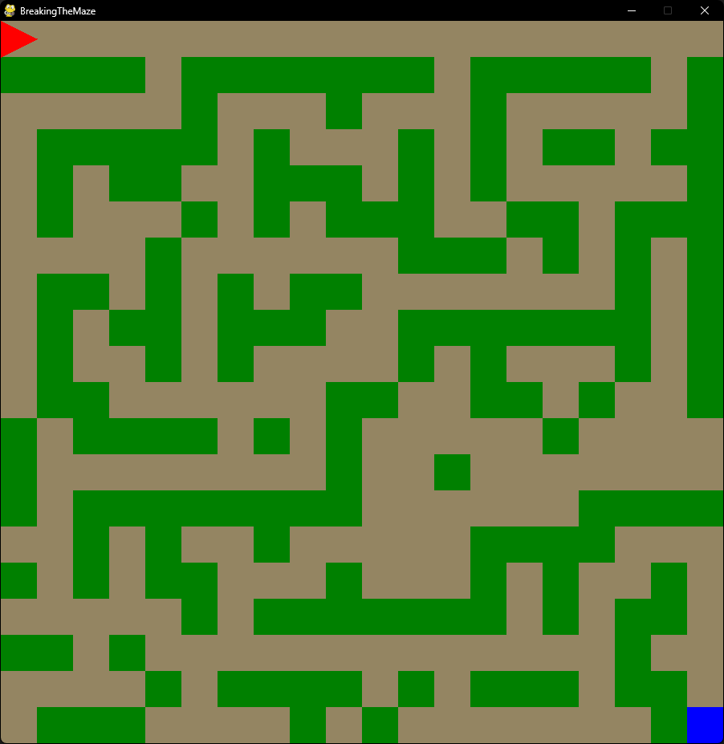
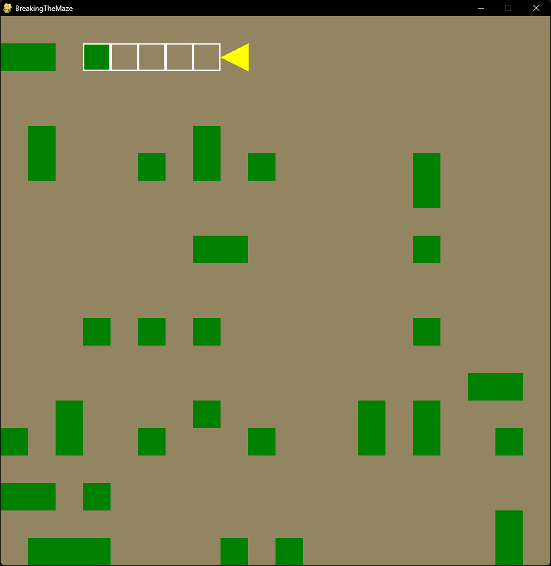
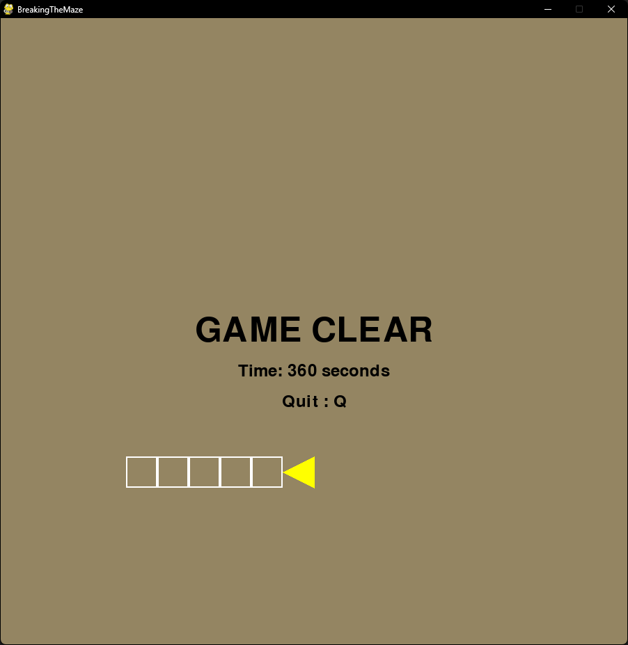

作成: 2025-05-19 21:46
githubリポジトリ BreakingTheMaze.exeを何らかの方法で実行すると開始します。はじめ左上に赤三角で表示されている自機を右下の青いゴールまでWASD操作で連れて行ってください。ゴールすると自機が黄色くなり、前方に白い枠が表示されます。この状態でスペースキーを押下すると緑の壁が消えます。この緑の壁をすべて消すとゲームクリアです。クリア時にすべて消すまでにかかった時間が表示されるので、好タイムを目指してがんばってください。 起動するとコンソール画面が開くと思いますがこれはpyinstallerでnoconsoleオプションを付けてもウィルス対策ソフトに引っかかるからで、その対処も面倒くさいのでやらなかったためです。多分消しても遊べます。 (参考までに) 2024年1月に作成しました。   
最終更新: 2025-07-28 02:42